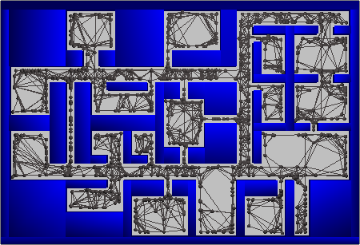
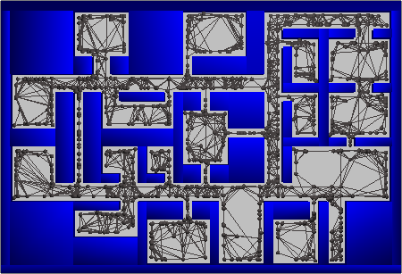
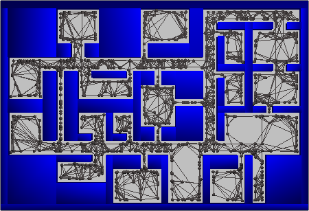

Avoidance Critical PRM
 

|
Felipe Felix Arias,
Brian Ichter,
Aleksandra Faust, Nancy M. Amato |
|
University of Illinois at Urbana-Champaign,
Google Brain Submitted to ICRA 2021 |
|
|
| Motion planning with dynamic obstacles is an essential problem towards navigation in the real-world. Sampling-based motion planning algorithms are able to find solutions by approximating the robot's configuration space through a graph representation, predicting or computing obstacles' trajectories, and finding feasible paths via a pathfinding algorithm. In this work, we seek to improve the performance of these subproblems by identifying regions critical to dynamic environment navigation and leveraging them to construct sparse probabilistic roadmaps. Motion planning and pathfinding algorithms should allow robots to prevent encounters with obstacles, irrespective of their trajectories, by being conscious of spatial context cues such as the location of chokepoints (e.g., doorways). Thus, we propose a self-supervised methodology for learning to identify regions relevant to obstacle avoidance from local environment features. As an application of this concept, we leverage a neural network to generate hierarchical probabilistic roadmaps termed Avoidance Critical Probabilistic Roadmaps (ACPRM). These roadmaps contain motion structures that enable efficient obstacle avoidance, reduce the search and planning space, and increase a roadmap's reusability and coverage. ACPRMs are demonstrated to achieve up to five orders of magnitude improvement over uniform grid sampling in the multi-agent setting and up to ten orders of magnitude over a competitive baseline in the multi-query setting. |
Avoidance Criticality |
| Using an agent waiting in place for obstacles to pass as a contextual cue that signifies a configuration's importance to obstacle avoidance, we train a neural network to identify regions important to dynamic environment navigation from local environment features. Below are random samples from our training data. |
|
|
| From darkest to lightest the cells represent: static obstacles, free space, the agents' region of origin within the occupancy grid, the avoidance critical region (center of the grid), and the agent's goal region within the occupancy grid. |
Avoidance Critical PRM |
| We introduce ACPRMs, which use the trained neural network to construct sparse probabilistic roadmaps with sufficient structure to support multi-agent motion planning in environments with narrow passages. We also demonstrate that ACPRMs enable efficient obstacle avoidance, reduce the search space, and increase a roadmap's reusability and coverage of the workspace. Below are images of an ACPRM (left) and a MAPRM (right), which retracts samples towards the medial-axis of the workspace to find narrow passages and improve coverage of the environment |
|

|
| Website adapted from Unnat Jain, Jingxiang Lin, Richard Zhang and Deepak Pathak. |